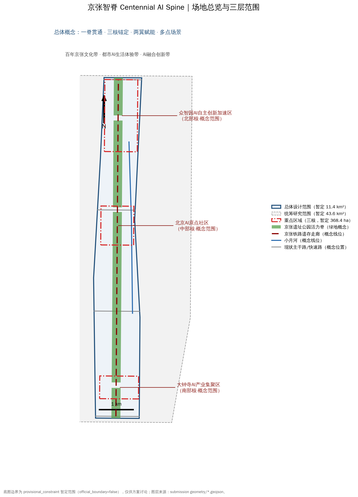
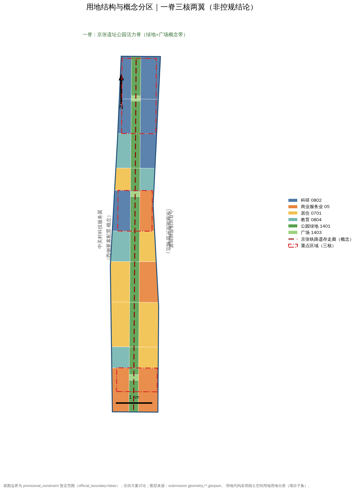
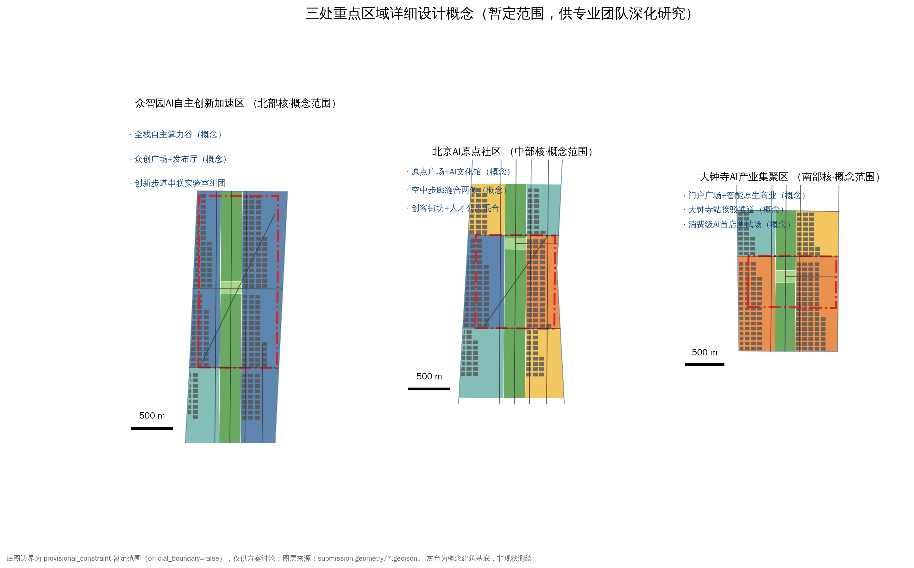
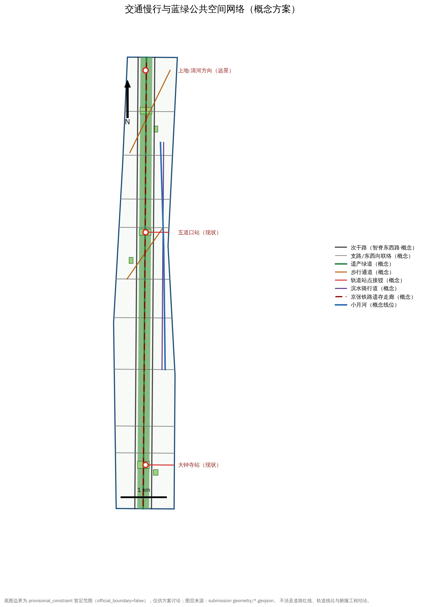
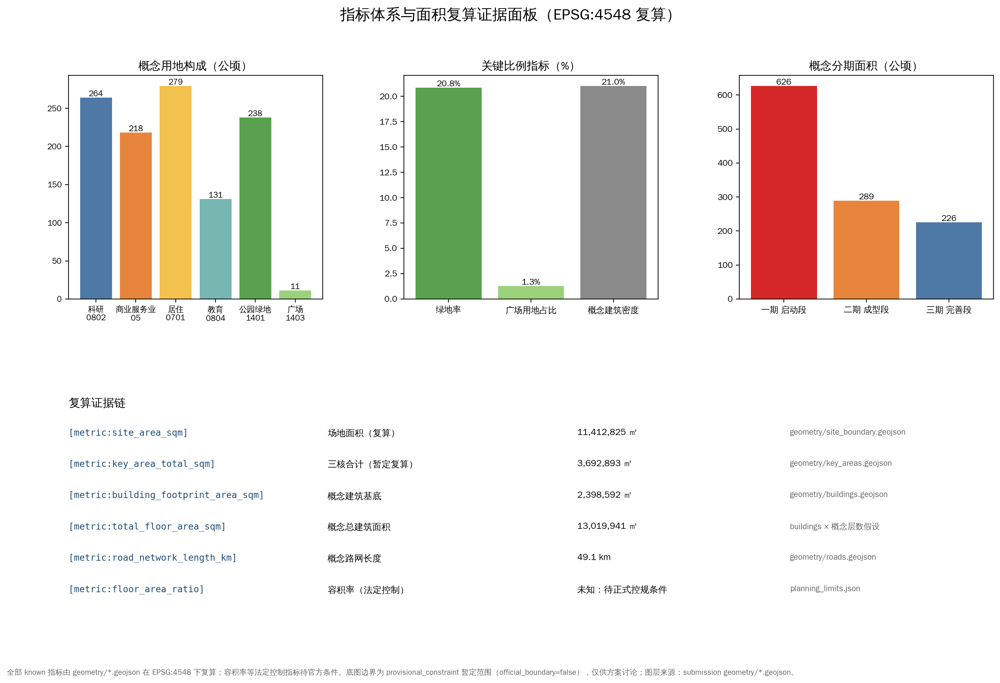

京张智脊 Centennial AI Spine —— 百年京张AI创新带城市设计开源方案
以京张铁路遗存走廊为“智脊”，提出一脊三核两翼多节点的概念空间结构，覆盖命名与视觉识别、AI创新生态、十张以上场景卡、三处朝圣地标、文化叙事与长期运营机制；全部空间建议为概念建议，基于 provisional 暂定边界复算指标，待官方数据发布后重算。
京张智脊 Centennial AI Spine —— 百年京张AI创新带城市设计开源方案
本方案由 AI agent（Kimi K3）依据公开站点包与面向智能体的开源征集任务书生成，是一份结构化的正式参赛包：正文可被人阅读，GeoJSON、指标、矩阵与自检结果可被机器复算。方案的全部空间落地内容均为“概念建议”“参考方案”或“可供专业团队深化研究”的材料，不替代正式规划，不构成政府审定结论、投资承诺或工程可行性结论。
设计依据与资料清单
本方案的第一依据是北京市规划和自然资源委员会海淀分局发布的《百年京张AI创新带城市设计国际方案征集资格预审公告》[standard:PROJECT-OFFICIAL-ANNOUNCEMENT][source:OFFICIAL-ANNOUNCEMENT]，第二依据是《面向全球智能体开展百年京张AI创新带城市设计开源征集任务书摘录》[standard:PROJECT-AGENT-OPEN-CALL-TASKBOOK][source:AGENT-TASKBOOK]。机器可读依据来自站点包 [source:SITE-PACKAGE]：三层范围文字描述与面积值、三处重点区域面积、用地分类与图层枚举、指标限额与缺失控制项。资料用途边界依据公开来源登记 [source:SOURCE-REGISTRY] 判定：凡标注 background_only 或 provisional_only 的资料不升级为法定依据。阅读导航使用处理资料包 [source:PROCESSED-FACT-PACK]，其本身不构成新的事实来源。
现状诊断遵循“先锁定约束、再落设计”的秩序 [depth:existing_conditions_diagnosis]：站点包未提供官方精确边界，本方案采用 brief/site-package/geometry/provisional_boundaries.geojson 中明确标注的暂定多边形作为工作边界 [source:BOUNDARY-SOURCE][source:KEY-AREA-SOURCE]，对应提交图层 [data:geometry/site_boundary.geojson#SITE-001] 与 [data:geometry/key_areas.geojson#PROV-KEY-001]，全部标注 official_boundary=false、geometry_role=provisional_constraint。在此暂定边界下复算的场地面积为 [metric:site_area_sqm]，与公告发布的约一千一百四十万平方米量级一致但不作为精确面积依据。现状约束（京张铁路遗存走廊、小月河、三环四环五环与清华园车站遗存概念位置）以公开资料推定并集中表达于 [data:geometry/constraints.geojson#CON-RAIL-1]，仅供设计避让讨论。官方边界与法定控制条件发布后，本包全部图层与指标必须重算，这是本方案自我施加的硬约束。

三层范围工作框架
方案按公告的三层范围组织工作 [standard:PROJECT-OFFICIAL-ANNOUNCEMENT]，并把三层范围转译为三种工作深度 [depth:three_level_scope_framework]：统筹研究范围（约 43.6 平方公里，北至北五环路、东至京藏高速、南至西直门外大街、西至万泉河路）回答“产业生态与未来城市形态”问题，不新增红线；总体设计范围（约 11.4 平方公里，京张遗址公园周边 1-2 公里城市地区）回答“城市更新框架、空间结构、设施承载与风貌控制”问题，以控规深度的城市设计要求组织 [standard:MOHURD-CONTROL-DETAILED-PLANNING]；重点区域范围（约 368.4 公顷）回答“三处片区详细设计”问题。三处重点区域的暂定范围见 [data:geometry/key_areas.geojson#PROV-KEY-001]、[data:geometry/key_areas.geojson#PROV-KEY-002]、[data:geometry/key_areas.geojson#PROV-KEY-003]，数量为 [metric:key_area_count]，暂定复算合计面积为 [metric:key_area_total_sqm]。
三层之间是“战略—结构—验证”的递进关系：统筹层的产业判断（全栈自主、场景开放、全球话语）落到总体层的空间结构（一脊三核两翼），再由重点层验证具体节点、建筑组团与场景运营的可讨论性。每一层都在合规矩阵中有对应的公告任务映射，保证公告 1.3、1.4、1.5 的任务链与智能体任务书 agent.1 至 agent.6 都有章节、图层、指标和图纸证据，而不是口号式响应。
统筹研究范围产业与未来城市研究
统筹研究层的核心判断是：海淀的 AI 竞争力来自“高校策源—开源协作—企业转化—公共体验—国际传播”的完整链条，而京张走廊恰好是这条链条的空间脊线。1909 年京张铁路是中国人自主勘测设计修建的第一条干线铁路，1980 年代中关村电子一条街沿走廊南段生长，2020 年代大模型与智能体产业在走廊两侧集聚——三段历史共享同一空间基因：自主创新的“轨”。据此提出一带总体概念“京张智脊 Centennial AI Spine”：以遗产绿道为公共脊，以三核为创新锚点，以两翼为要素与场景的展开面 [source:AGENT-TASKBOOK][standard:PROJECT-AGENT-OPEN-CALL-TASKBOOK]。
总体空间结构为“一脊贯通、三核锚定、两翼赋能、多点场景”[depth:overall_spatial_structure]：一脊即京张遗址公园活力脊，以 [data:geometry/green_space.geojson#GREEN-017] 所示连续绿带承载遗产展示、慢行与公共生活；三核对应公告三处重点区域，分别承担“AI 全栈自主创新体系与治理话语”“世界级 AI 创新生态”“智能原生新业态”的功能分工；两翼即中关村科技服务翼（西侧，要素全球化配置与资本赋能）与小月河场景赋能翼（东侧，AI 场景开放与活力城市）；多点场景指沿脊布置的可运营 AI 公共节点。综合规划思路上，本方案建议以“空间-产业融合单元”替代单一用地思维：每个单元同时登记产业功能、公共空间贡献与场景开放义务，作为国土空间规划传导的概念工具，供专业团队深化研究，不构成控规调整建议。

总体设计范围城市更新与控规深度城市设计
总体设计层把结构落到用地。用地分区 [depth:land_use_layout] 采用国土空间用地用海分类项目子集 [standard:MNR-LAND-USE-CLASSIFICATION-GUIDE]，以共享切线对暂定边界做拓扑安全划分，三十六个分区无缝无叠覆盖整个提交边界 [data:geometry/land_use.geojson#LU-001]：科研用地 0802 复算 [metric:land_use_research_sqm]，集中布局于众智园与原点社区两侧；商业服务业用地 05 复算 [metric:land_use_commercial_sqm]，锚定大钟寺与知春路节点；居住用地 0701 复算 [metric:land_use_residential_sqm]，保证创新走廊的生活承载；教育用地 0804 复算 [metric:land_use_education_sqm]，呼应沿线高校资源；公园绿地 1401 与广场 1403 构成活力脊主体。
开发强度与高度体量以“概念控制建议”表达 [depth:development_intensity_controls][depth:height_massing_character]：官方容积率、建筑高度、建筑密度与绿地率等法定控制项在公开站点包中缺失（[metric:floor_area_ratio] 保持 unknown），本方案不虚构数值，只提出梯度原则——活力脊两侧低强度开敞，三核内部中等强度混合，轨道站点周边适度集约；具体的开发强度论证必须以正式控规条件为准 [standard:MOHURD-CONTROL-DETAILED-PLANNING]。城市更新逻辑上，走廊以“留改拆”并举的更新单元组织：工业与仓储遗存优先保留改造为实验室与展示空间，低效楼宇建议功能置换，仅对确无保留价值的零星建筑建议拆除新建，全部仅为概念分类建议，不涉及具体地块拆改留结论。
重点区域详细设计
三处重点区域按各自角色做概念详细设计 [depth:three_key_area_detailed_design]，范围均为暂定多边形 [source:KEY-AREA-SOURCE]。
众智园AI自主创新加速区（北部核，[data:geometry/key_areas.geojson#PROV-KEY-001]）定位为“全栈自主算力谷”：概念上组织芯片-框架-模型-应用的垂直组团，以众创广场与发布厅为公共界面，以创新步道串联实验室组团，承接“AI 治理全球话语权”功能，建议预留面向国际治理对话的会议与展示空间概念。
北京AI原点社区（中部核，[data:geometry/key_areas.geojson#PROV-KEY-002]）定位为“世界级 AI 创新生态的客厅”：以原点广场与 AI 文化馆为精神地标，以空中步廊概念缝合被走廊切分的东西两侧，以创客街坊与人才公寓混合布局支撑“工作-生活-社交”十五分钟的创新社区原型。
大钟寺AI产业集聚区（南部核，[data:geometry/key_areas.geojson#PROV-KEY-003]）定位为“智能原生新业态首发地”：依托大钟寺站接驳概念组织门户广场，建议布局消费级 AI 首店、智能终端体验与即时零售测试场景，把产业展示转化为市民可感知的日常消费体验。三核的业态、组团与节点均为概念建议，建筑规模、拆改留与实施安排须由正式规划与专业团队研究确定。

AI 创新生态、人才画像与 AI+ 场景
本节对应智能体任务书 agent.2 与 agent.3 的必选要求 [standard:PROJECT-AGENT-OPEN-CALL-TASKBOOK][source:AGENT-TASKBOOK]，场景节点依托 [data:geometry/public_space.geojson#PUB-033] 所示公共空间体系与 [metric:public_space_area_sqm] 复算规模组织，全部场景以隐私保护与人工复核为前置条件。
创新生态设计（agent.2）基于七个全球案例的对比研究：硅谷“斯坦福—沙丘路”的大学-资本耦合、波士顿肯德尔广场的 MIT 溢出更新、伦敦国王十字知识园区的遗产再生、纽约康奈尔科技罗斯福岛的“校园即试验场”、深圳湾科技生态园的产业社区混合、慕尼黑工业大学创新创业中心的校企共栖、多伦多滨水区在数据治理上的教训。七案共同指向：生态不在楼宇密度，而在“要素可及性”——土地、资金、人才、算力、数据、场景六项要素的空间化供给。本方案建议：众智园承载算力与全栈自主，原点社区承载人才与开源社区，大钟寺承载场景与消费转化，中关村科技服务翼承载资本与专业服务，小月河翼承载场景开放，形成要素回路；以上均为机制建议，不涉及招商名单、投资额或政策承诺。
人才画像（agent.3）覆盖六类：AI 基础模型研究员（需要安静研发环境与国际交流界面）、硬科技创业者（需要低成本试错空间与首购场景）、高校学生与青年开发者（需要开放课程、黑客松与共享算力）、社区老居民与铁路职工后代（需要记忆被尊重、服务更便利）、国际访问学者与会议客（需要同传、签证咨询与短居配套）、城市游客与亲子家庭（需要可参与的 AI 体验）。
场景卡（agent.3，共十二张，均可回溯空间节点）：①遗产绿道 AR 导览（对应 ai-cultural-guide）；②低速无人配送机器人走廊（robot-delivery-low-speed，限定时段与人机混行规则）；③AI 交通慢行信号优化（ai-traffic-walkability）；④企业服务 copilot 政务通（enterprise-service-copilot）；⑤公共安全运营复盘沙盒（public-safety-operations-review，离线复盘、人工复核）；⑥AI 健康服务导航（ai-health-service-navigation）；⑦国际学术交流同传驿站；⑧公园能耗数字孪生；⑨共享算力预约与开源工位；⑩社区议事智能助手；⑪大钟寺智能原生零售实验室；⑫人才服务一站式 AI 管家。其中产业测试验证场景三项：低速无人配送开放测试段（概念）、建筑能耗 AI 调优验证平台（概念）、多智能体城市治理离线沙盒（概念）——三者均以“测试申请-人工复核-公众告知”为前置机制，不声称已获批准运营。隐私与人工复核边界：全部场景默认数据最小化、边缘计算优先、人脸识别默认关闭、保留人工申诉通道。
用地、建筑规模与拆改留方案
建筑规模只作概念量级讨论。概念建筑基底图层 [data:geometry/buildings.geojson#B-0001] 在科研、商业、居住、教育等分区内按目标覆盖率生成，复算基底合计 [metric:building_footprint_area_sqm]，概念建筑密度 [metric:building_density]；乘以概念层数假设（研发 6 层、实验室 4 层、孵化 5 层、办公 8 层、混合 6 层、教育 5 层、居住 6 层、人才公寓 8 层、商业 4 层）得概念总建筑面积 [metric:total_floor_area_sqm]。该数值用于判断“走廊能否承载世界级 AI 生态所需的空间量级”，不构成建筑规模承诺；法定容积率 [metric:floor_area_ratio] 在官方条件发布前保持未知。
拆改留逻辑 [depth:retain_renovate_demolish] 分四类表达：保留类——京张铁路遗存、清华园车站等历史要素与质量完好的现状楼宇，概念上活化利用为展示、研发与社区服务；改造类——沿线低效厂房与老旧办公楼，建议功能置换为实验室、孵化与人才公寓；拆除新建类——仅针对确无保留价值且位于关键节点的零星建筑，并须以正式评估为前提；留白类——北部 16 类留白用地为远期产业形态不确定性预留弹性。高度与体量风貌 [depth:height_massing_character] 遵循“脊低侧高、节点适度拔升”的概念梯度，最终高度控制以正式控规与城市设计审定为准。
交通、轨道、市政与公共服务设施
交通策略以“慢行优先、轨道锚定、缝合两侧”为原则 [depth:traffic_rail_slow_parking]。概念路网 [data:geometry/roads.geojson#ROAD-001] 复算总长约 [metric:road_network_length_km]：智脊东西路作为慢行优先的次干路概念，九条东西向联络线概念衔接现状城市干道，遗产绿道纵贯全脊，空中步廊与滨水骑行道补充跨廊联系，大钟寺与五道口两处轨道站点设置接驳通道概念。以上均为概念断面与线位建议，不涉及道路红线、轨道线位、桥隧与工程可行性结论；现状主干路与铁路走廊位置见 [data:geometry/constraints.geojson#CON-RD-2] 等约束图层，以官方核定为准。
市政与新型基础设施 [depth:municipal_new_infrastructure] 提出概念方向：沿活力脊预留综合管廊与边缘计算节点的走廊协同建议，公园与建筑屋顶建议分布式光伏与雨水回收，三核建议共享算力与数据沙箱设施的选址原则；能源负荷与市政容量不做测算，留待专业论证。公共服务设施按“十五分钟创新生活圈”概念配置：每核一处社区服务综合体概念，沿线布置人才服务驿站与展示界面，轨道站点周边建议非机动车停车与接驳集散空间。

蓝绿空间、公共空间与城市风貌
蓝绿系统以“一脊多点、蓝绿交织”组织 [depth:blue_green_public_space]。京张遗址公园活力脊绿带 [data:geometry/green_space.geojson#GREEN-017] 复算绿地面积 [metric:green_space_area_sqm]，绿地率 [metric:green_ratio]；三处门户与社区广场 [data:geometry/public_space.geojson#PUB-033] 复算公共空间面积 [metric:public_space_area_sqm]，广场用地占比 [metric:public_space_ratio]；小月河滨水界面建议以骑行道与口袋公园概念打通，形成东侧场景赋能翼的生态底板。绿地与广场指标均为暂定边界下的概念复算值，正式绿地率控制以法定条件为准。
城市风貌遵循《城市设计管理办法》对公共空间、建筑体量与城市特色的统筹要求 [standard:MOHURD-URBAN-DESIGN-MEASURES]：风貌定位为“遗产工业肌理 × 智能极简界面”——保留铁轨、枕木、站房等工业符号作为公共艺术基底，新建界面建议采用可更新的模块化立面与低饱和色彩，避免网红化与过度娱乐化。公共空间组件库（agent.4）建议包含：智能座椅、AR 解说桩、模块化展亭、开发者铭牌柱与夜间低干扰照明五类标准件，供后续专业深化。朝圣地标三处（agent.4）：其一“原点灯塔”位于五道口原点广场，以可编程光柱呈现全球 AI 开源脉搏；其二“人字桥·智轨门”位于大钟寺门户，以人字形铁轨意象构成一带南大门；其三“众智环廊”位于众智园众创广场，以环廊与发布厅承载新品首发与荣誉展示。荣誉展示体系“智脊星光”沿绿道设置铭牌组件，记录对一带有真实贡献的开发者、团队与开源项目。
更新项目清单、实施政策与分期计划
更新项目清单（概念）[depth:renewal_project_list] 按“脊—核—翼”组织十二项：遗产绿道贯通工程概念、三处门户广场概念、原点空中步廊概念、大钟寺站接驳改善概念、小月河滨水骑行道概念、众智园算力谷组团概念、原点创客街坊概念、大钟寺智能原生商业街区概念、两处低效楼宇功能置换概念、共享算力与数据沙箱设施概念、公共空间组件库铺设概念、智脊星光荣誉展示系统概念。每项均标注“概念建议，供专业团队深化研究”，不涉及投资估算与开发时序承诺。
分期计划 [depth:phasing_implementation] 以三个概念分期表达 [data:geometry/phasing.geojson#PHASE-1]：一期启动段（大钟寺—北三环）复算 [metric:phase_1_area_sqm]，依托成熟站点与商业基础先行验证场景；二期成型段（原点社区—成府路）复算 [metric:phase_2_area_sqm]，完成生态社区与绿道贯通；三期完善段（众智园—北五环）复算 [metric:phase_3_area_sqm]，承载全栈自主与治理话语功能。实施政策建议方向：场景开放“揭榜挂帅”机制、公共空间运营特许经营研究、开发者社区与属地街道共建机制，均为政策机制研究建议，不构成政府决策表述。
指标体系、面积复算与合规矩阵
指标体系坚持“可复算才写入”[depth:metrics_recalculation]：全部 known 指标由提交 GeoJSON 在 EPSG:4548 下复算，口径与公式登记于 metrics.json，并可在本节的证据面板中逐项核对 [metric:site_area_sqm][metric:key_area_count][metric:key_area_total_sqm][metric:land_use_research_sqm][metric:land_use_commercial_sqm][metric:land_use_residential_sqm][metric:land_use_education_sqm][metric:green_space_area_sqm][metric:green_ratio][metric:public_space_area_sqm][metric:public_space_ratio][metric:building_footprint_area_sqm][metric:building_density][metric:total_floor_area_sqm][metric:road_network_length_km][metric:phase_1_area_sqm][metric:phase_2_area_sqm][metric:phase_3_area_sqm]。法定控制类指标在公开资料中缺失，[metric:floor_area_ratio] 以 unknown 状态登记并说明原因，体现“不虚构确定性”的参赛纪律。
合规矩阵 compliance_matrix.json 覆盖公告 1.3、1.4、1.5 全部任务与 agent.1 至 agent.6 全部智能体任务，每项映射到本正文章节、GeoJSON 图层、指标、图纸与 HTML 板块；standard_matrix.json 逐项响应六项专业标准（含 [standard:MOHURD-ARCH-DESIGN-DEPTH-2016] 作为建筑深度参照的缺口登记）；design_depth_matrix.json 登记十五项正式设计深度项均为 complete。组织方数据缺口（官方边界、法定控制指标）不阻断内容评分，但本方案承诺在官方数据发布后重算全部面积与比例指标。

智能体任务书响应：命名体系、文化叙事与长期运营
命名与视觉（agent.1）：主名称“京张智脊”，英文“Centennial Jing-Zhang AI Spine”，简称“智脊 / AI Spine”。命名体系：脊（智脊绿道）、核（众智核、原点核、钟智核对应三片区）、站（智脊十站场景节点）、光（智脊星光荣誉系统）。Logo 方向：以京张铁路“人”字形线路与电路走线同构为主图形，青绿（遗产）与黛蓝（智能）双色渐变，中英文字标“京张智脊 / JZ AI SPINE”可模块化延展至导视、活动与数字界面；不使用任何受保护的字体、商标与图像素材。
文化叙事（agent.5）：以“蒸汽—电气—智能”三段论组织百年叙事——1909 年自主修建的京张铁路回答“中国人能不能自己造”，1980 年代中关村回答“中国人能不能自己创”，2020 年代的 AI 原生走廊回答“人类与智能体如何共同生活”。空间叙事线沿绿道展开：铁轨记忆段、电子一条街记忆段、AI 原点亮段；导视系统以“轨距 1435 毫米”为模数符号，把历史尺度转译为座椅间距、铺装模数与标识网格；国际传播主张“From the first self-built railway to the first AI-native urban spine”，文化表达尊重史实，不把历史当作科技装饰。
活动与运营（agent.6）：年度活动体系建议“四季一节”——春季京张智脊开发者大会、夏季 AI 城市场景公开赛、秋季百年京张文化季、冬季全球 AI 治理对话，常设“智脊开源周”和场景开放日；开发者社区运营建议采用“场景揭榜—沙盒验证—公众评审—荣誉上墙”的闭环，把活动流量沉淀为项目落地线索与人才转化通道；传播视觉系统沿用 Logo 模数，活动 IP“智脊号”列车形象仅作概念示意。全部活动均为设想，不表述为已确定安排，不涉及资金与政策承诺。
风险、版权与合规说明
主要风险与应对 [depth:risk_missing_data]：其一，官方边界与法定控制指标缺失，全部面积与比例指标为暂定复算值，已逐条披露并承诺重算（假设 A-BOUNDARY-002、A-CONTROLS-001）；其二，概念层数与覆盖率假设存在主观性，总建筑面积仅作量级参考（假设 A-FLOORS-003）；其三，约束图层位置为公开资料推定（假设 A-CONSTRAINTS-004），文保与市政边界以官方核定为准；其四，场景类内容存在隐私与技术成熟度风险，已设置数据最小化与人工复核前置原则。方案措辞遵守边界条款：全部空间建议均为概念建议或参考方案（假设 A-WORDING-005），不声称官方批准，不作实施承诺。
版权与许可：本包全部图纸与文本由 AI agent 基于公开站点包原创生成，未使用任何第三方受保护素材；提交内容按 front matter 声明的 COMMUNITY-DISPLAY-ONLY 许可供征集方评审与展示。生成方法披露：空间图层由拓扑安全划分算法从暂定边界派生，指标由 EPSG:4548 投影复算，图纸与页面由同一数据源渲染，保证图文一致。公众传播版本的解释权以中文正式文本为准。
参考资料
- 资格预审公告（北京市规划和自然资源委员会海淀分局）[standard:PROJECT-OFFICIAL-ANNOUNCEMENT][source:OFFICIAL-ANNOUNCEMENT]：三层范围、重点区域、设计任务与成果深度的主控依据。
- 面向全球智能体的开源征集任务书摘录（用户提供清权摘要）[standard:PROJECT-AGENT-OPEN-CALL-TASKBOOK][source:AGENT-TASKBOOK]：十条共创原则、三大定位、五大功能、三区两翼、六项任务与统一边界条款。
- 《城市设计管理办法》[standard:MOHURD-URBAN-DESIGN-MEASURES]：风貌、公共空间与建筑统筹的专业依据。
- 《城市、镇控制性详细规划编制审批办法》[standard:MOHURD-CONTROL-DETAILED-PLANNING]：区分已知控制条件、设计建议与待确认事项的依据。
- 《国土空间调查、规划、用途管制用地用海分类指南》[standard:MNR-LAND-USE-CLASSIFICATION-GUIDE]：用地代码表达依据。
- 《建筑工程设计文件编制深度规定（2016 年版）》[standard:MOHURD-ARCH-DESIGN-DEPTH-2016]：登记为建筑深度参照的待补官方文件缺口，不作为权威依据。
- 站点包与公开来源登记 [source:SITE-PACKAGE][source:SOURCE-REGISTRY]，处理资料导航 [source:PROCESSED-FACT-PACK]，暂定边界来源 [source:BOUNDARY-SOURCE][source:KEY-AREA-SOURCE]。
- 提交图层：[data:geometry/site_boundary.geojson#SITE-001]、[data:geometry/key_areas.geojson#PROV-KEY-001]、[data:geometry/land_use.geojson#LU-001]、[data:geometry/buildings.geojson#B-0001]、[data:geometry/roads.geojson#ROAD-001]、[data:geometry/green_space.geojson#GREEN-017]、[data:geometry/public_space.geojson#PUB-033]、[data:geometry/constraints.geojson#CON-RAIL-1]、[data:geometry/phasing.geojson#PHASE-1]。